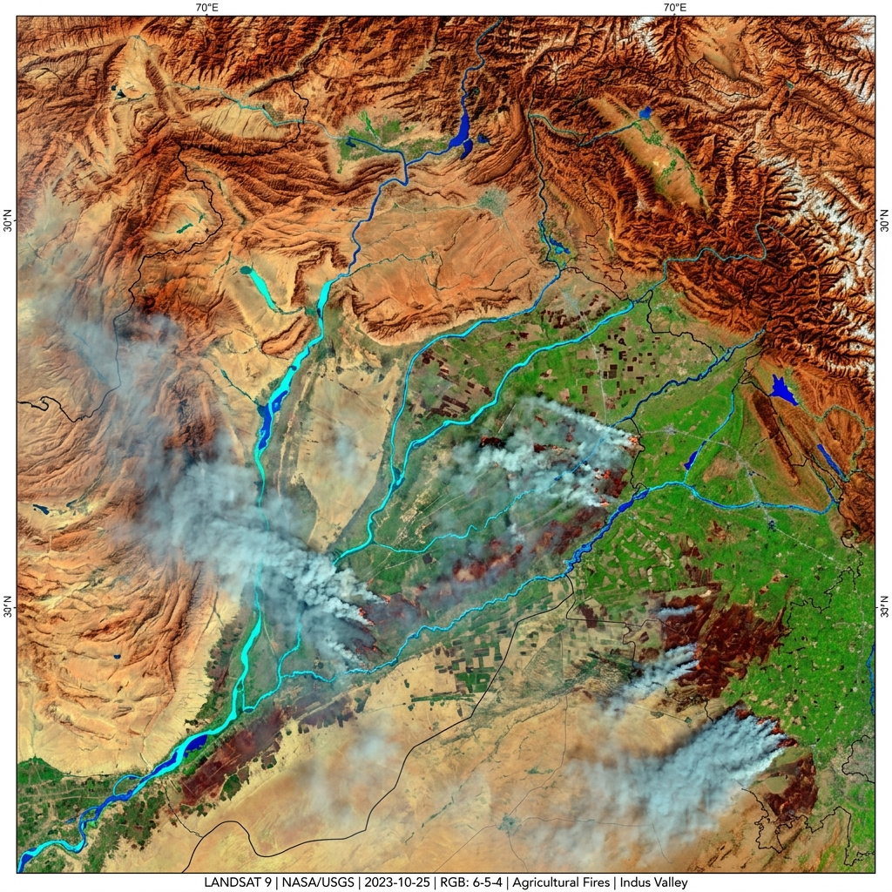

Seven years of daily station data never announced a crisis. It just kept recording one.
A Public-Health Investigation by Signal Earth & CPCB Analytical Engine
Fine particulate matter ( PM2.5 ) doesn't just hang in the sky. Measuring less than 2.5 microns across, it bypasses the body's upper respiratory defenses, penetrating deep into pulmonary alveoli and diffusing directly into arterial blood circulation.
Over 62.6% of all monitored days violently breached the national 24-hour safe threshold of 60 µg/m³. Against the WHO guideline of 15 µg/m³, non-compliance exceeds 94%.
A monsoon storm clears the haze. A cold front traps vehicle exhaust. A dry summer wind whips up crustal road dust. No single day reveals the transformation. But annual cycles placed side by side demonstrate how meteorology dictates the air quality cycle.
Select a season to inspect empirical health category percentages and boundary layer dynamics.
Daily composite AQI with 7-day and 30-day moving momentum overlaid on regulatory CPCB health hazard bands.
By mapping continuous wind direction degrees across 16 cardinal sectors against multi-pollutant concentrations, we uncover the spatial fingerprints of incoming pollution corridors.
During post-monsoon and early winter, prevailing northwesterly winds transport regional crop residue combustion smoke directly from Punjab and Haryana into the capital basin, driving fine particle concentrations above 250 µg/m³.
Southeasterly winds exhibit elevated nitrogen dioxide (NO2) and sulfur dioxide (SO2) loading, pinpointing the signature of heavy diesel truck bypass corridors and industrial manufacturing clusters.
Not all pollution is created equal. The ratio between fine ( PM2.5 ) and coarse ( PM10 ) particles separates combustion aerosols from mechanical road dust, while volatile aromatic ratios identify traffic exhaust versus industrial solvent releases.
Ratios > 0.60 indicate secondary combustion smoke. Ratios < 0.40 indicate coarse crustal road dust.
Benzene is an established IARC Group 1 human carcinogen. 15.7% of monitored days violate safety standards.
Can we anticipate a catastrophic air crisis 24 hours before it engulfs the city? We trained supervised ensemble models using multi-day chronological pollutant lags, meteorological inertia, and solar harmonics.
Data alone does not clean the air. The findings of this multi-year investigation demand targeted engineering interventions and proactive regulatory action.
Automated enforcement activated when 24-hr predictive models forecast AQI > 300: immediate halt on diesel generators, mechanized street sweepers with water curtains, and diversion of interstate freight traffic.
Address the 15.7% benzene exceedance rate and elevated T/B ratios by mandating closed-loop Vapor Recovery Systems (VRS) at all retail fuel outlets and coating solvent recovery in surrounding industrial zones.
Recommission unlogged meteorological pods (horizontal and vertical wind velocity) to enable Gaussian dispersion modeling and real-time chemical mass balance source apportionment.
All standardized datasets, statistical summaries, publication-grade figures, and reproducible code are open for academic and public scrutiny.